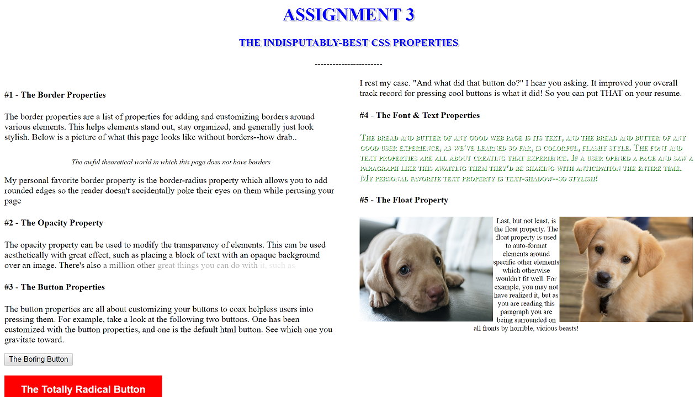

#1 - The Border Properties
The border properties are a list of properties for adding and customizing borders around various elements. This helps elements stand out, stay organized, and generally just look stylish. Below is a picture of what this page looks like without borders--how drab..
The awful theoretical world in which this page does not have borders
My personal favorite border property is the border-radius property which allows you to add rounded edges so the reader doesn't accidentally poke their eyes on them while perusing your page
-----------------------
#2 - The Opacity Property
The opacity property can be used to modify the transparency of elements.
This can be used aesthetically with great effect, such as placing a block of
text with an opaque background over an image. There's also
-----------------------
#3 - The Button Properties
The button properties are all about customizing your buttons to coax helpless users into pressing them. For example, take a look at the following two buttons. One has been customized with the button properties, and one is the default html button. See which one you gravitate toward.
I rest my case. "And what did that button do?" I hear you asking. It improved your overall track record for pressing cool buttons is what it did! So you can put THAT on your resume.
-----------------------
#4 - The Font & Text Properties
The bread and butter of any good web page is its text, and the bread and butter of any good user experience, as we've learned so far, is colorful, flashy style. The font and text properties are all about creating that experience. If a user opened a page and saw a paragraph like this awaiting them they'd be shaking with anticipation the entire time. My personal favorite text property is text-shadow--so stylish!
-----------------------
#5 - The Float Property

 Last, but not least, is the float property. The float property is used to auto-format elements
around specific other elements which otherwise wouldn't fit well. For example, you may not have
realized it, but as you are reading this paragraph you are being surrounded on all fronts by horrible,
vicious beasts!
Last, but not least, is the float property. The float property is used to auto-format elements
around specific other elements which otherwise wouldn't fit well. For example, you may not have
realized it, but as you are reading this paragraph you are being surrounded on all fronts by horrible,
vicious beasts!